1. Bloco vazio (agente manual)
Novo: um bloco próprio "Endereço e telefone" na página, logo abaixo de "Nome e jeito de falar". Vazio, uma frase e o botão Adicionar.
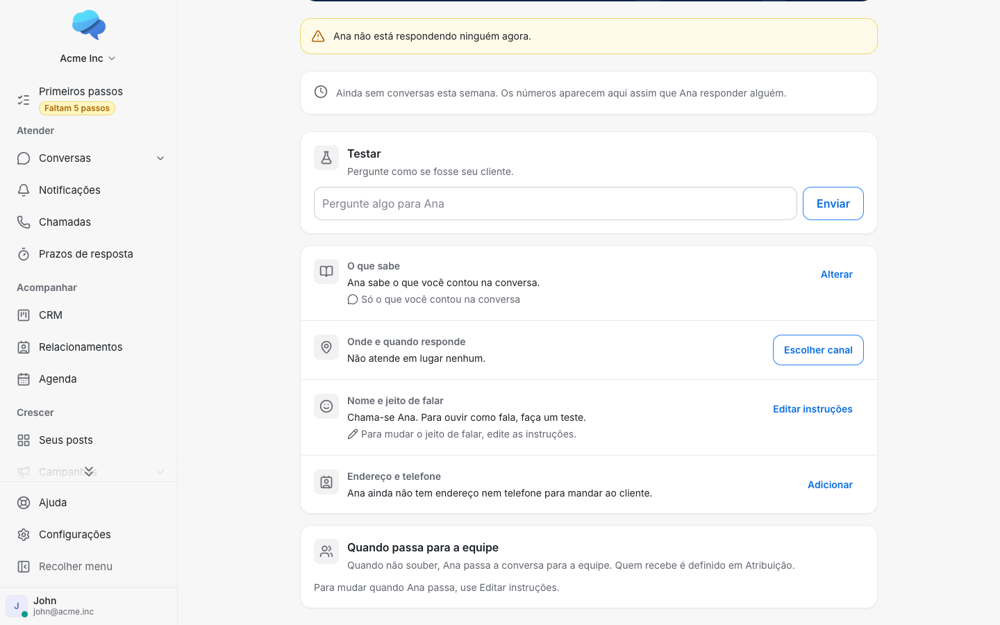
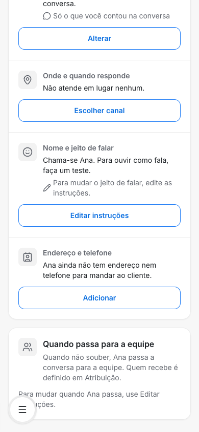
2. Gaveta curta, vazia
Novo: Adicionar abre uma gaveta só com os dois campos, Salvar e Cancelar. A dica do endereço lembra que, vazio, vale o da página de agendamento. A do telefone só diz o que o agente faz.
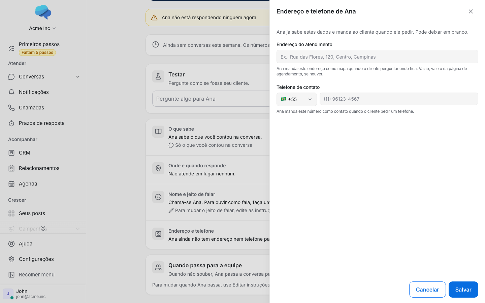
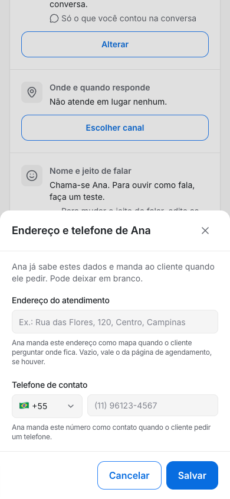
3. Telefone incompleto
Com o número pela metade, Salvar não grava e leva ao campo com o aviso.
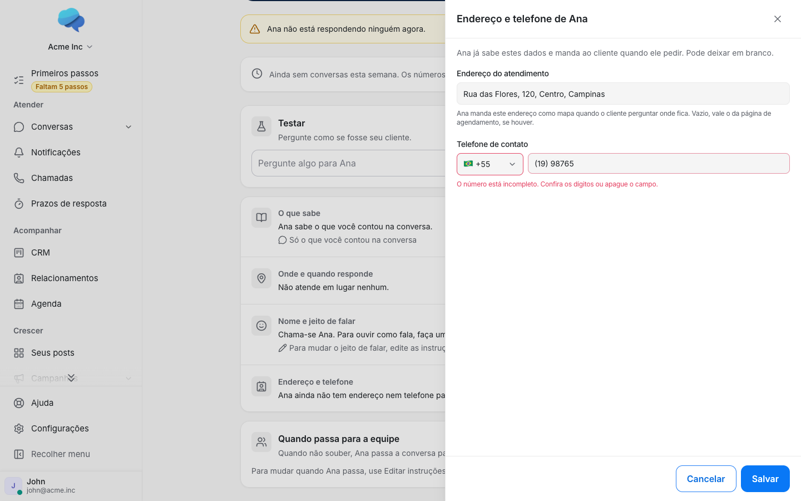
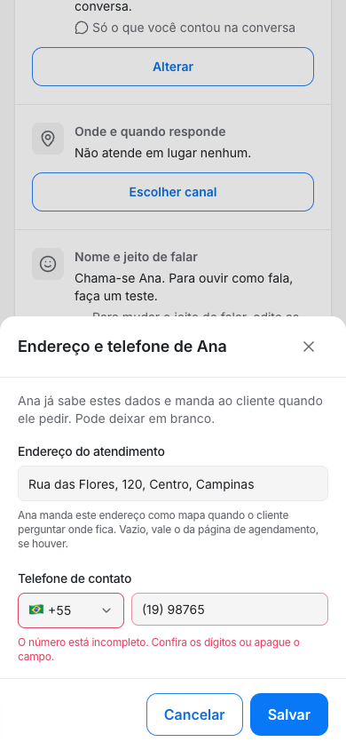
4. Salvo, bloco preenchido
Com o número completo, Salvar grava ("Endereço e telefone salvos.") e o bloco mostra o endereço e o telefone, com a frase de que o agente já sabe esses dados. O botão vira Alterar.
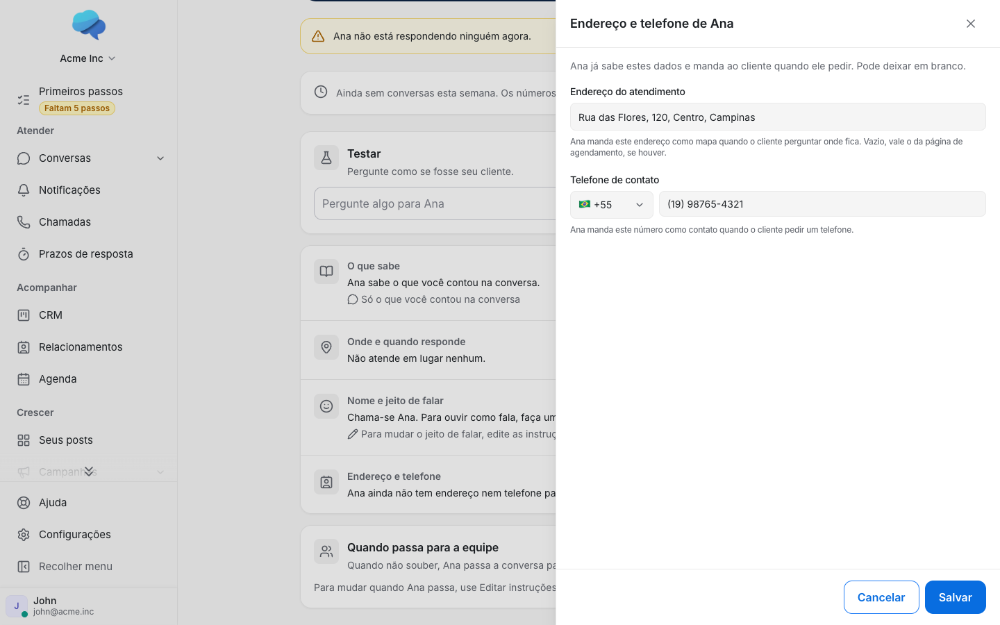
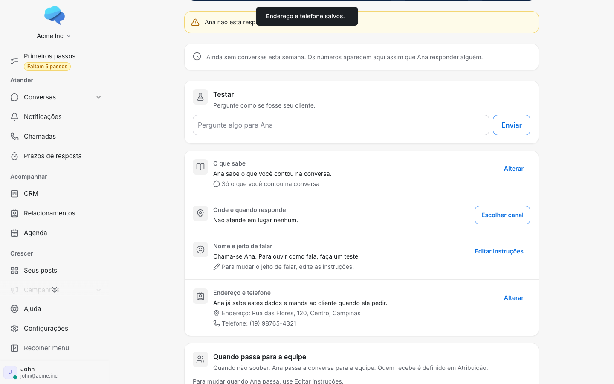
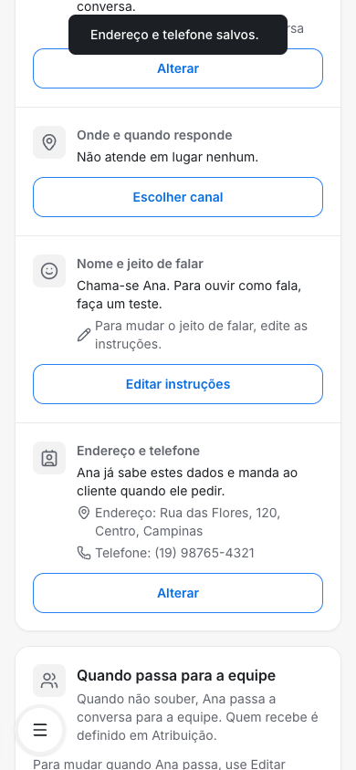
5. Agente no modo conversando
O mesmo bloco aparece para o agente montado conversando (Bia), que não tem gaveta de instruções.
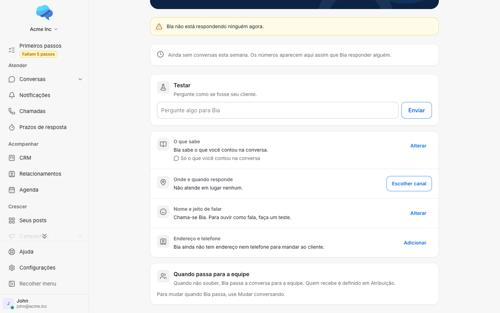
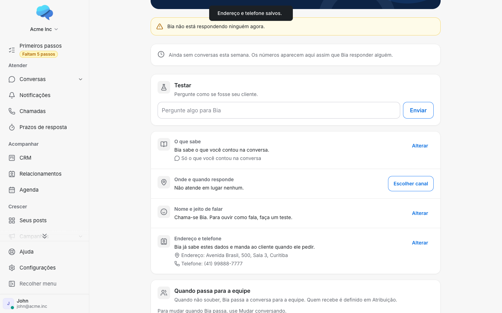
6. Flag desligada
Igual a hoje: sem o bloco, nos dois modos, e a gaveta de Instruções só com o texto.
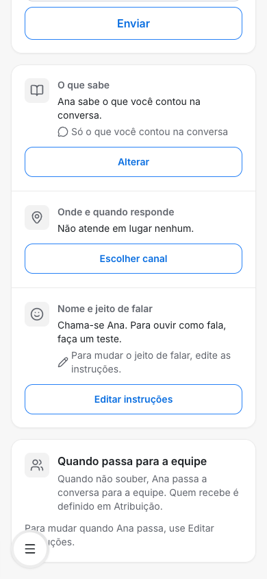
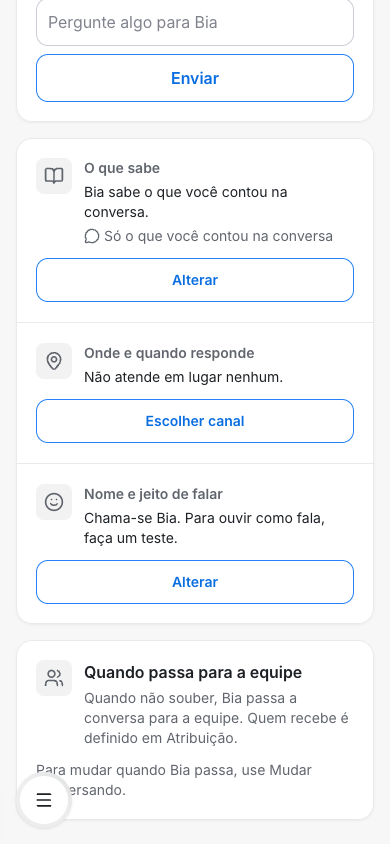
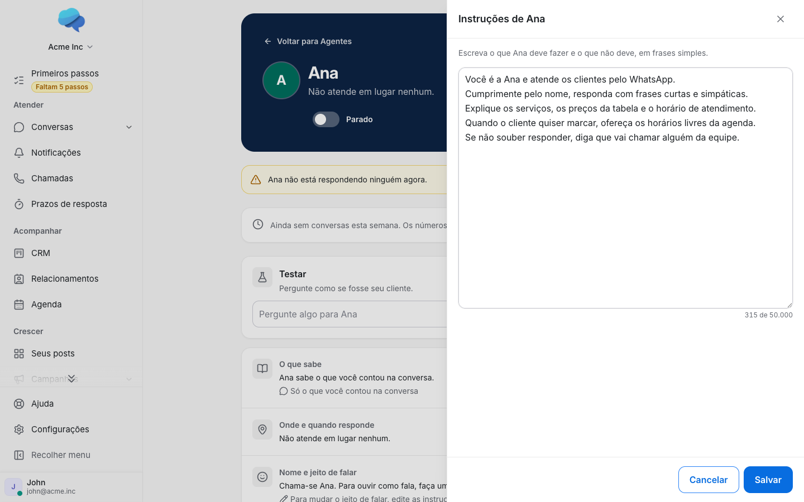